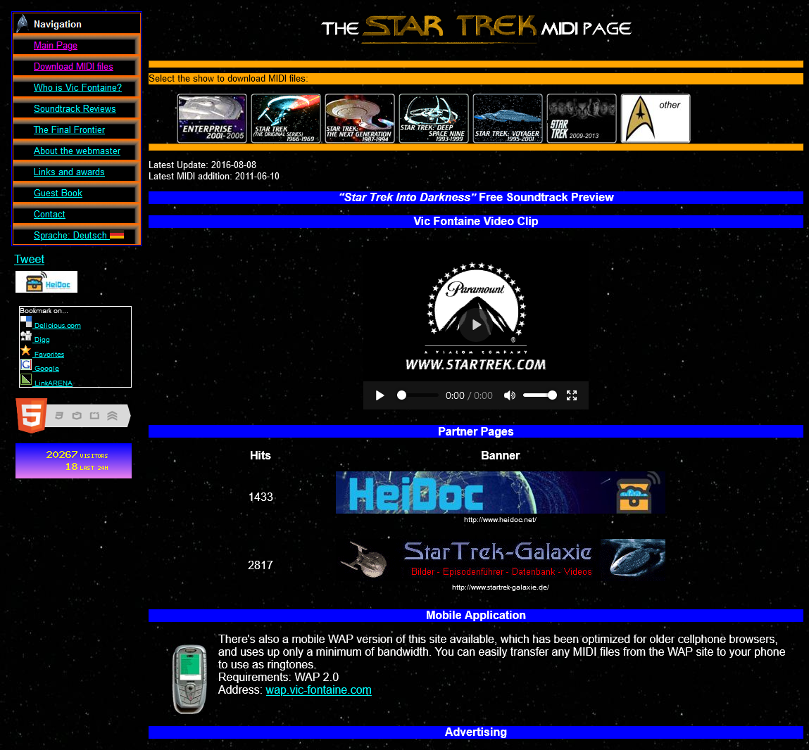
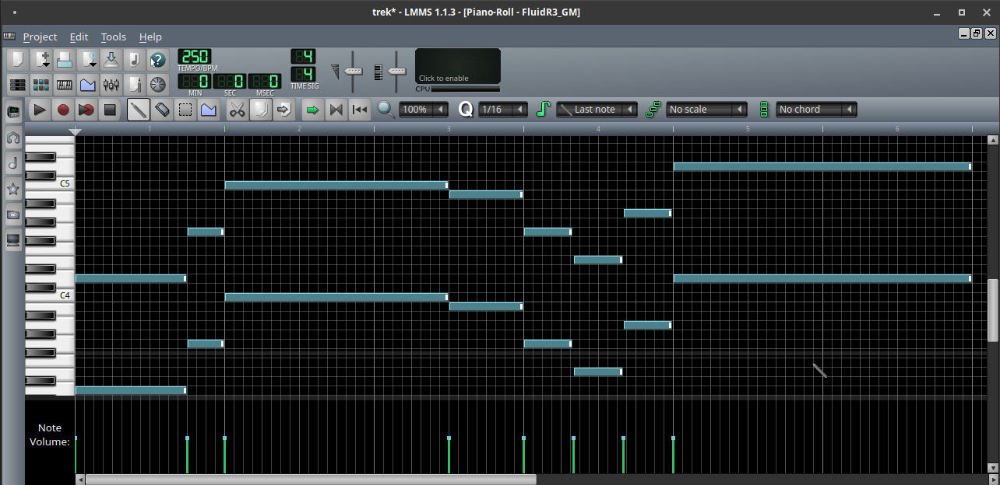

One of my earliest computer tinkerings, beyond just aimlessly clicking things I found in system folders when I could barely read, was installing Ubuntu on the old family computer. It took a good deal of effort to convince my parents that one, it would not destroy the machine, and two, that I would not destroy the machine. In the end, though, the machine survived and the experience kicked off a lifelong curiosity with Linux, and led to the timeline we inhabit where I have written this post.
The reason I fell in love with Linux was the endless customization. As a kid, doing even menial things like installing updates or fighting with drivers was endlessly fun when you had wobbly windows and five thousand icon sets to choose from. The possibilities were endless, and they extended not just to the desktop UI itself but to GRUB, where I would spend hours configuring, GIMPing, and rebooting until I got all of the text to perfectly align with my static background image to make the all-text menu look like a proper 2005 graphical menu--naturally, with Tux in the corner.
Nowadays GRUB2 is VASTLY more complicated than the old GRUB of my youth, so much so that you no longer just pull up your menu.lst in your favorite editor (or the only one you know how to use) and get going. One of the features crammed into GRUB2 is the GRUB_INIT_TUNE config option, which, it turns out, does just what you might suspect: it plays a little ditty on system init.
As I have gone about teaching myself networking, I have been using Star Trek-themed names for my systems. My VPS has the hostname ds9. My gaming rig is battlebridge. My VPN is subspace, my phone tricorder, you're getting the picture.
So, naturally, I had to make GRUB_INIT_TUNE play Star Trek.
I knew from the get go that this was going to be a lot easier if I could find musical notation for the Star Trek theme, or even better, a MIDI file of the theme. Luckily, the internet has a penchant for being an occasionally beautiful, magical place, and no sooner had I typed in "star trek midi" than I found the adorable vic-fontaine.com, a glorious throwback to Web 1.0 complete with all the Star Trek MIDI files your heart could desire.

In another stroke of luck, I came across someone's handy little python script, midi2grub, which could do all of what I thought would be the hard part--actually translating something resembling a musical score into a proper GRUB_INIT_TUNE config. Now all that was left was the easy part, the part where I would just pop open the MIDI file into some editor, slice out the bit I wanted, maybe change the key/shift the pitch to sit nicely in that warm midrangey tone of a state-of-the-art hi-fi BIOS Piezo buzzer.
As it turns out, simply popping the MIDI file into an editor was less simple than I thought. While I am a musician, my abilities lie in the land of rock guitar--a land where the peak of musical technology happened somewhere around 1968. MIDI, then, is largely a mystery to me yet, much less editing it on a computer. I of course had no application to do such a thing already installed on my Windows machine, and my Linux machine was only just set up, with nothing going.
Much to my chagrin, though, audio was not working out-of-the-box on my fresh Ubuntu 19.10 installation. The reason for my audio headaches was that just days prior I had installed a Sound Blaster Z soundcard, and while this did great things on the Windows side like bring back EAX for retro games and better echo cancellation for Discord, it was, for whatever reason, causing all audio in Linux to come out incredibly quiet and nastily garbled.
I spent probably close to an hour fiddling with alsa-mixer and qjackctl and the default Xfce pulseaudio panels trying anything and everything that I thought had even the slightest chance of working, but nothing did.
Nearing my wits end, I had the thought "well this is a fresh installation and Ubuntu literally makes a product for this so let's try that." I downloaded Ubuntu Studio and installed it. Yet again, I could not get audio. This time, though, I had the handy Ubuntu Studio Controls app which got me squared away. In what seems like an oversight for someone with decade-plus experience in both Linux and audio, my Creative card was showing as 3 devices in Linux and I was using the wrong one, apparently.
Working with MIDI files was harder than I expected on Ubuntu Studio, too. Unfortunately, I am writing this a while after doing all the work, and the precise details of what all I attempted are now fuzzy. I remember having to hunt down soundfont files and move them around at some point, and I remember installing just about any MIDI package that looked promising. Simply playing a MIDI file was possible out of the box, but getting actual MIDI sequencers to properly render instruments and play them to my speakers was something else entirely.
I ran through every MIDI app I could find--timidity, rosegarden, muse, musescore--and each time I either had to spend several minutes just to get audio output at all, or simply found that I was too unfamiliar with the ins and outs of MIDI to actually slice up the track the way I wanted. The easy part was not going well.
Enter LMMS. I had actually used LMMS on Windows way back in my youth, albeit briefly. LMMS with its plain multitrack interface and classic piano-roll sequencing, immediately made sense to me. I isolated the track I wanted, made some slight edits to shorten it up without making it sound wrong, and ended up with a short 5-second clip of a Star Trek jingle. For those familiar, it is the very first fanfare you hear in the intro from The Next Generation.
 [if you squint, it almost looks like the Enterprise]
LMMS had one fatal flaw. It could not export MIDI. I felt so betrayed to have come so far and yet failed. My initial searches told me that while MIDI export was a planned feature for LMMS, it had not yet been implemented.
Fortunately, somebody out there had actually written the code to convert an LMMS project into MIDI. It just wasn't merged into the app yet. Cue the LMMS to MIDI Converter, the website that made my dreams come true. The site converted my stripped-down single-instrument two-bar LMMS project into a plain old MIDI file with no issues. Then MIDI2GRUB gave me a GRUB_INIT_TUNE line that I could test out.
It took a bit of tweaking yet to get it to sound exactly how I wanted. It turns out that you can't quite just arbitrarily set the GRUB "tempo" value to whatever you want, I am guessing whatever drives your speaker in BIOS can only switch tones so fast, or something. With a little bit of playing around, though, I got it exactly how I wanted it, and boy howdy does it make my day seeing the United Federation of Planets UEFI logo come up, followed by the little TNG Jingle. A night well spent, as far as I'm concerned.
I want to also shout out GRUB Customizer as it makes setting up GRUB to your liking a lot easier. I use it any time I'm setting up a dual-boot as it simplifies the installtion of custom GRUB themes, making it an effortless click-and-forget process that GRUB doesn't really provide on its own. I'm working on a matching United Federation of Planets GRUB2 theme, so keep an eye out.
You can add the tune via grub-customizer in General>Advanced Settings, or you can just tack the following line onto the end of your /etc/default/grub file then run grub-mkconfig.
GRUB_INIT_TUNE="20000 584 144 736 48 1048 288 984 96 784 63 0 1 656 64 880 63 0 1 1176 192"